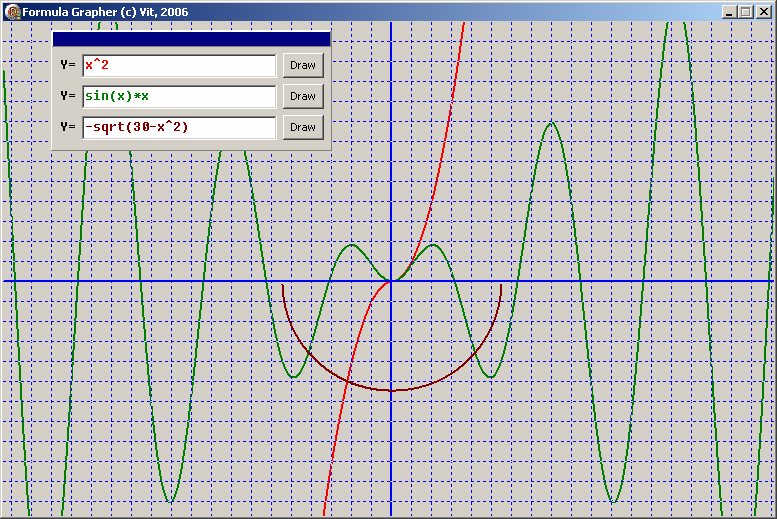

DRKB Explorer
Программа, выводящая график функции в декартовых координатах
01.01.2010
На днях ребёнку в школе задали задание по графикам функций, при отсутствии под рукой готовых програм нацарапал своё приложение, причём приложение написано "двумя пальцами", т.е. без каких-либо украшательств, не очень красивым кодом и без комментариев - простая програмка, написаннная за 15 минут.

Вот исходники:
unit Main;
interface
uses
Windows, Messages, SysUtils, Variants, Classes, Graphics, Controls, Forms,
Dialogs, StdCtrls;
type
TForm1 = class(TForm)
Panel1: TPanel;
Button1: TButton;
Edit1: TEdit;
Label1: TLabel;
Button2: TButton;
Edit2: TEdit;
Label2: TLabel;
Button3: TButton;
Edit3: TEdit;
Label3: TLabel;
Panel2: TPanel;
procedure FormPaint(Sender: TObject);
procedure Panel2MouseDown(Sender: TObject; Button: TMouseButton;
Shift: TShiftState; X, Y: Integer);
procedure Edit3KeyPress(Sender: TObject; var Key: Char);
procedure Edit2KeyPress(Sender: TObject; var Key: Char);
procedure Edit1KeyPress(Sender: TObject; var Key: Char);
procedure Button3Click(Sender: TObject);
procedure Button2Click(Sender: TObject);
procedure Button1Click(Sender: TObject);
private
procedure DrawFunction(FormulaText:string; Cl:TColor);
function GetValue(FormulaText:string; x: real): real;
procedure SetupAxes;
{ Private declarations }
public
{ Public declarations }
end;
var
Form1: TForm1;
implementation
uses math, parsing;
{$R *.dfm}
Function TForm1.GetValue(FormulaText:string; x:real):real;
begin
Result:=GetFormulaValue(StringReplace(FormulaText, 'x', floattostr(x),[rfReplaceAll, rfIgnoreCase]));
end;
procedure TForm1.Panel2MouseDown(Sender: TObject; Button: TMouseButton;
Shift: TShiftState; X, Y: Integer);
begin
ReleaseCapture;
Panel1.perform(WM_SysCommand, $F012, 0);
end;
procedure TForm1.SetupAxes;
var point:TPoint;
i:integer;
begin
{Draw axis X}
Canvas.Pen.Width:=2;
Canvas.Pen.Color:=clBlue;
Point.X:=0;
Point.Y:=(height div 2);
canvas.PenPos:=Point;
Canvas.LineTo(width, height div 2);
{Draw axis Y}
Point.X:=width div 2;
Point.Y:=0;
canvas.PenPos:=Point;
Canvas.LineTo(width div 2, height);
for I := 1 to (width div 40) do
begin
Canvas.Pen.Width:=1;
Canvas.Pen.Style:= psDot;
Point.X:=width div 2 +i*20;
Point.Y:=0;
canvas.PenPos:=Point;
Canvas.LineTo(width div 2 +i*20, height);
end;
for I := -1 downto (width div 40)*(-1) do
begin
Canvas.Pen.Width:=1;
Canvas.Pen.Style:= psDot;
Point.X:=width div 2 +i*20;
Point.Y:=0;
canvas.PenPos:=Point;
Canvas.LineTo(width div 2 +i*20, height);
end;
for I := 1 to (height div 40) do
begin
Canvas.Pen.Width:=1;
Canvas.Pen.Style:= psDot;
Point.Y:=height div 2 +i*20;
Point.X:=0;
canvas.PenPos:=Point;
Canvas.LineTo(width, height div 2 +i*20);
end;
for I := -1 downto (height div 40)*(-1) do
begin
Canvas.Pen.Width:=1;
Canvas.Pen.Style:= psDot;
Point.Y:=height div 2 +i*20;
Point.X:=0;
canvas.PenPos:=Point;
Canvas.LineTo(width, height div 2 +i*20);
end;
end;
procedure TForm1.Button1Click(Sender: TObject);
begin
Invalidate;
end;
procedure TForm1.Button2Click(Sender: TObject);
begin
Invalidate;
end;
procedure TForm1.Button3Click(Sender: TObject);
begin
Invalidate;
end;
Procedure TForm1.DrawFunction(FormulaText:string; Cl:TColor);
var i:integer;
j:real;
P:real;
x1, x2, x0:real;
W:integer;
k:real;
point:TPoint;
error:boolean;
prev, value:integer;
begin
if FormulaText='' then exit;
SetupAxes;
Canvas.Pen.Color:=cl;
Canvas.Pen.Style:= psSolid;
Canvas.Pen.Width:=2;
{setup first point}
try
p:=GetValue(FormulaText, width div -40);
Point.X:=0;
Point.Y:=round(p*20);
canvas.PenPos:=Point;
prev:=Point.Y;
error:=false;
except
error:=true;
end;
for I := 0 to width do
try
if error then
begin
Point.X:=i;
Point.Y:=(height div 2) - round(GetValue(FormulaText,(i-width/2)/20)*20);
prev:=Point.Y;
Canvas.PenPos:=Point;
end
else
begin
value:=(height div 2) - round(GetValue(FormulaText,(i-width/2)/20)*20);
if abs(value)<height then
Canvas.LineTo(i,value)
else
raise exception.Create('');
end;
error:=false;
except
error:=true;
end;
end;
procedure TForm1.Edit1KeyPress(Sender: TObject; var Key: Char);
begin
if key=#13 then Invalidate;
end;
procedure TForm1.Edit2KeyPress(Sender: TObject; var Key: Char);
begin
if key=#13 then Invalidate;
end;
procedure TForm1.Edit3KeyPress(Sender: TObject; var Key: Char);
begin
if key=#13 then Invalidate;
end;
procedure TForm1.FormPaint(Sender: TObject);
begin
DrawFunction(Edit1.Text, clRed);
DrawFunction(Edit2.Text, clGreen);
DrawFunction(Edit3.Text, clMaroon);
end;
end.
object Form1: TForm1
Left = 357
Top = 465
BorderIcons = [biSystemMenu, biMinimize]
BorderStyle = bsSingle
Caption = 'Formula Grapher (c) Vit, 2006'
ClientHeight = 494
ClientWidth = 771
Color = clBtnFace
Font.Charset = DEFAULT_CHARSET
Font.Color = clWindowText
Font.Height = -11
Font.Name = 'Tahoma'
Font.Style = []
OldCreateOrder = False
Position = poScreenCenter
OnPaint = FormPaint
PixelsPerInch = 96
TextHeight = 13
object Panel1: TPanel
Left = 48
Top = 8
Width = 281
Height = 121
TabOrder = 0
object Label1: TLabel
Left = 9
Top = 27
Width = 16
Height = 16
Caption = 'Y='
Font.Charset = DEFAULT_CHARSET
Font.Color = clWindowText
Font.Height = -11
Font.Name = 'Fixedsys'
Font.Style = []
ParentFont = False
end
object Label2: TLabel
Left = 9
Top = 58
Width = 16
Height = 16
Caption = 'Y='
Font.Charset = DEFAULT_CHARSET
Font.Color = clWindowText
Font.Height = -11
Font.Name = 'Fixedsys'
Font.Style = []
ParentFont = False
end
object Label3: TLabel
Left = 9
Top = 89
Width = 16
Height = 16
Caption = 'Y='
Font.Charset = DEFAULT_CHARSET
Font.Color = clWindowText
Font.Height = -11
Font.Name = 'Fixedsys'
Font.Style = []
ParentFont = False
end
object Button1: TButton
Left = 232
Top = 23
Width = 41
Height = 25
Caption = 'Draw'
TabOrder = 1
OnClick = Button1Click
end
object Edit1: TEdit
Left = 31
Top = 24
Width = 195
Height = 24
Font.Charset = DEFAULT_CHARSET
Font.Color = clRed
Font.Height = -11
Font.Name = 'Fixedsys'
Font.Style = []
ParentFont = False
TabOrder = 0
OnKeyPress = Edit1KeyPress
end
object Button2: TButton
Left = 232
Top = 54
Width = 41
Height = 25
Caption = 'Draw'
TabOrder = 3
OnClick = Button2Click
end
object Edit2: TEdit
Left = 31
Top = 55
Width = 195
Height = 24
Font.Charset = DEFAULT_CHARSET
Font.Color = clGreen
Font.Height = -11
Font.Name = 'Fixedsys'
Font.Style = []
ParentFont = False
TabOrder = 2
OnKeyPress = Edit2KeyPress
end
object Button3: TButton
Left = 232
Top = 85
Width = 41
Height = 25
Caption = 'Draw'
TabOrder = 5
OnClick = Button3Click
end
object Edit3: TEdit
Left = 31
Top = 86
Width = 195
Height = 24
Font.Charset = DEFAULT_CHARSET
Font.Color = clMaroon
Font.Height = -11
Font.Name = 'Fixedsys'
Font.Style = []
ParentFont = False
TabOrder = 4
OnKeyPress = Edit3KeyPress
end
object Panel2: TPanel
Left = 1
Top = 1
Width = 279
Height = 16
Align = alTop
Color = clNavy
TabOrder = 6
OnMouseDown = Panel2MouseDown
end
end
end
Для разбора математических выражений использовался модуль Parsing из RxLib:
{*******************************************************}
{ }
{ Delphi VCL Extensions (RX) }
{ }
{ Copyright (c) 1995, 1996 AO ROSNO }
{ Copyright (c) 1997, 1998 Master-Bank }
{ }
{*******************************************************}
unit Parsing;
interface
{ $I RX.INC}
uses SysUtils, Classes;
type
TParserFunc = (pfArcTan, pfCos, pfSin, pfTan, pfAbs, pfExp, pfLn, pfLog,
pfSqrt, pfSqr, pfInt, pfFrac, pfTrunc, pfRound, pfArcSin, pfArcCos,
pfSign, pfNot);
ERxParserError = class(Exception);
{$IFDEF WIN32}
TUserFunction = function(Value: Extended): Extended;
{$ELSE}
TUserFunction = Pointer;
{$ENDIF}
TRxMathParser = class(TObject)
private
FCurPos: Cardinal;
FParseText: string;
function GetChar: Char;
procedure NextChar;
function GetNumber(var AValue: Extended): Boolean;
function GetConst(var AValue: Extended): Boolean;
function GetFunction(var AValue: TParserFunc): Boolean;
function GetUserFunction(var Index: Integer): Boolean;
function Term: Extended;
function SubTerm: Extended;
function Calculate: Extended;
public
function Exec(const AFormula: string): Extended;
class procedure RegisterUserFunction(const Name: string; Proc: TUserFunction);
class procedure UnregisterUserFunction(const Name: string);
end;
function GetFormulaValue(const Formula: string): Extended;
{$IFNDEF WIN32}
function Power(Base, Exponent: Extended): Extended;
{$ENDIF}
implementation
//uses RxTConst;
uses dialogs;
const
SpecialChars = [#0..' ', '+', '-', '/', '*', ')', '^'];
FuncNames: array[TParserFunc] of PChar =
('ARCTAN', 'COS', 'SIN', 'TAN', 'ABS', 'EXP', 'LN', 'LOG',
'SQRT', 'SQR', 'INT', 'FRAC', 'TRUNC', 'ROUND', 'ARCSIN', 'ARCCOS',
'SIGN', 'NOT');
{ Parser errors }
procedure InvalidCondition(Str: String);
begin
raise Exception.Create(Str);
end;
{ IntPower and Power functions are copied from Borland's MATH.PAS unit }
function IntPower(Base: Extended; Exponent: Integer): Extended;
{$IFDEF WIN32}
asm
mov ecx, eax
cdq
fld1 { Result := 1 }
xor eax, edx
sub eax, edx { eax := Abs(Exponent) }
jz @@3
fld Base
jmp @@2
@@1: fmul ST, ST { X := Base * Base }
@@2: shr eax,1
jnc @@1
fmul ST(1),ST { Result := Result * X }
jnz @@1
fstp st { pop X from FPU stack }
cmp ecx, 0
jge @@3
fld1
fdivrp { Result := 1 / Result }
@@3:
fwait
end;
{$ELSE}
var
Y: Longint;
begin
Y := Abs(Exponent);
Result := 1.0;
while Y > 0 do begin
while not Odd(Y) do begin
Y := Y shr 1;
Base := Base * Base;
end;
Dec(Y);
Result := Result * Base;
end;
if Exponent < 0 then Result := 1.0 / Result;
end;
{$ENDIF WIN32}
function Power(Base, Exponent: Extended): Extended;
begin
if Exponent = 0.0 then Result := 1.0
else if (Base = 0.0) and (Exponent > 0.0) then Result := 0.0
else if (Frac(Exponent) = 0.0) and (Abs(Exponent) <= MaxInt) then
Result := IntPower(Base, Trunc(Exponent))
else Result := Exp(Exponent * Ln(Base))
end;
{ User defined functions }
type
{$IFDEF WIN32}
TFarUserFunction = TUserFunction;
{$ELSE}
TFarUserFunction = function(Value: Extended): Extended;
{$ENDIF}
var
UserFuncList: TStrings;
function GetUserFuncList: TStrings;
begin
if not Assigned(UserFuncList) then begin
UserFuncList := TStringList.Create;
with TStringList(UserFuncList) do begin
Sorted := True;
Duplicates := dupIgnore;
end;
end;
Result := UserFuncList;
end;
procedure FreeUserFunc; far;
begin
UserFuncList.Free;
UserFuncList := nil;
end;
{ Parsing routines }
function GetFormulaValue(const Formula: string): Extended;
begin
with TRxMathParser.Create do
try
Result := Exec(Formula);
finally
Free;
end;
end;
{ TRxMathParser }
function TRxMathParser.GetChar: Char;
begin
Result := FParseText[FCurPos];
end;
procedure TRxMathParser.NextChar;
begin
Inc(FCurPos);
end;
function TRxMathParser.GetNumber(var AValue: Extended): Boolean;
var
C: Char;
SavePos: Cardinal;
Code: Integer;
IsHex: Boolean;
TmpStr: string;
begin
Result := False;
C := GetChar;
SavePos := FCurPos;
TmpStr := '';
IsHex := False;
if C = '$' then begin
TmpStr := C;
NextChar;
C := GetChar;
while C in ['0'..'9', 'A'..'F', 'a'..'f'] do begin
TmpStr := TmpStr + C;
NextChar;
C := GetChar;
end;
IsHex := True;
Result := (Length(TmpStr) > 1) and (Length(TmpStr) <= 9);
end
else if C in ['+', '-', '0'..'9', '.', DecimalSeparator] then begin
if (C in ['.', DecimalSeparator]) then TmpStr := '0' + '.'
else TmpStr := C;
NextChar;
C := GetChar;
if (Length(TmpStr) = 1) and (TmpStr[1] in ['+', '-']) and
(C in ['.', DecimalSeparator]) then TmpStr := TmpStr + '0';
while C in ['0'..'9', '.', 'E', 'e', DecimalSeparator] do begin
if C = DecimalSeparator then TmpStr := TmpStr + '.'
else TmpStr := TmpStr + C;
if (C = 'E') then begin
if (Length(TmpStr) > 1) and (TmpStr[Length(TmpStr) - 1] = '.') then
Insert('0', TmpStr, Length(TmpStr));
NextChar;
C := GetChar;
if (C in ['+', '-']) then begin
TmpStr := TmpStr + C;
NextChar;
end;
end
else NextChar;
C := GetChar;
end;
if (TmpStr[Length(TmpStr)] = '.') and (Pos('E', TmpStr) = 0) then
TmpStr := TmpStr + '0';
Val(TmpStr, AValue, Code);
Result := (Code = 0);
end;
Result := Result and (FParseText[FCurPos] in SpecialChars);
if Result then begin
if IsHex then AValue := StrToInt(TmpStr)
{ else AValue := StrToFloat(TmpStr) };
end
else begin
AValue := 0;
FCurPos := SavePos;
end;
end;
function TRxMathParser.GetConst(var AValue: Extended): Boolean;
begin
Result := False;
case FParseText[FCurPos] of
'E':
if FParseText[FCurPos + 1] in SpecialChars then
begin
AValue := Exp(1);
Inc(FCurPos);
Result := True;
end;
'P':
if (FParseText[FCurPos + 1] = 'I') and
(FParseText[FCurPos + 2] in SpecialChars) then
begin
AValue := Pi;
Inc(FCurPos, 2);
Result := True;
end;
end
end;
function TRxMathParser.GetUserFunction(var Index: Integer): Boolean;
var
TmpStr: string;
I: Integer;
begin
Result := False;
if (FParseText[FCurPos] in ['A'..'Z', 'a'..'z', '_']) and
Assigned(UserFuncList) then
begin
with UserFuncList do
for I := 0 to Count - 1 do begin
TmpStr := Copy(FParseText, FCurPos, Length(Strings[I]));
if (CompareText(TmpStr, Strings[I]) = 0) and
(Objects[I] <> nil) then
begin
if FParseText[FCurPos + Cardinal(Length(TmpStr))] = '(' then
begin
Result := True;
Inc(FCurPos, Length(TmpStr));
Index := I;
Exit;
end;
end;
end;
end;
Index := -1;
end;
function TRxMathParser.GetFunction(var AValue: TParserFunc): Boolean;
var
I: TParserFunc;
TmpStr: string;
begin
Result := False;
AValue := Low(TParserFunc);
if FParseText[FCurPos] in ['A'..'Z', 'a'..'z', '_'] then begin
for I := Low(TParserFunc) to High(TParserFunc) do begin
TmpStr := Copy(FParseText, FCurPos, StrLen(FuncNames[I]));
if CompareText(TmpStr, StrPas(FuncNames[I])) = 0 then begin
AValue := I;
if FParseText[FCurPos + Cardinal(Length(TmpStr))] = '(' then begin
Result := True;
Inc(FCurPos, Length(TmpStr));
Break;
end;
end;
end;
end;
end;
function TRxMathParser.Term: Extended;
var
Value: Extended;
NoFunc: TParserFunc;
UserFunc: Integer;
Func: Pointer;
begin
if FParseText[FCurPos] = '(' then begin
Inc(FCurPos);
Value := Calculate;
if FParseText[FCurPos] <> ')' then InvalidCondition('SParseNotCramp');
Inc(FCurPos);
end
else begin
if not GetNumber(Value) then
if not GetConst(Value) then
if GetUserFunction(UserFunc) then begin
Inc(FCurPos);
Func := UserFuncList.Objects[UserFunc];
Value := TFarUserFunction(Func)(Calculate);
if FParseText[FCurPos] <> ')' then InvalidCondition('SParseNotCramp');
Inc(FCurPos);
end
else if GetFunction(NoFunc) then begin
Inc(FCurPos);
Value := Calculate;
try
case NoFunc of
pfArcTan: Value := ArcTan(Value);
pfCos: Value := Cos(Value);
pfSin: Value := Sin(Value);
pfTan:
if Cos(Value) = 0 then InvalidCondition('SParseDivideByZero')
else Value := Sin(Value) / Cos(Value);
pfAbs: Value := Abs(Value);
pfExp: Value := Exp(Value);
pfLn:
if Value <= 0 then InvalidCondition('SParseLogError')
else Value := Ln(Value);
pfLog:
if Value <= 0 then InvalidCondition('SParseLogError')
else Value := Ln(Value) / Ln(10);
pfSqrt:
if Value < 0 then InvalidCondition('SParseSqrError')
else Value := Sqrt(Value);
pfSqr: Value := Sqr(Value);
pfInt: Value := Round(Value);
pfFrac: Value := Frac(Value);
pfTrunc: Value := Trunc(Value);
pfRound: Value := Round(Value);
pfArcSin:
if Value = 1 then Value := Pi / 2
else Value := ArcTan(Value / Sqrt(1 - Sqr(Value)));
pfArcCos:
if Value = 1 then Value := 0
else Value := Pi / 2 - ArcTan(Value / Sqrt(1 - Sqr(Value)));
pfSign:
if Value > 0 then Value := 1
else if Value < 0 then Value := -1;
pfNot: Value := not Trunc(Value);
end;
except
on E: ERxParserError do raise
else InvalidCondition('SParseInvalidFloatOperation');
end;
if FParseText[FCurPos] <> ')' then InvalidCondition('SParseNotCramp');
Inc(FCurPos);
end
else InvalidCondition('SParseSyntaxError');
end;
Result := Value;
end;
function TRxMathParser.SubTerm: Extended;
var
Value: Extended;
begin
Value := Term;
while FParseText[FCurPos] in ['*', '^', '/'] do begin
Inc(FCurPos);
if FParseText[FCurPos - 1] = '*' then
Value := Value * Term
else if FParseText[FCurPos - 1] = '^' then
Value := Power(Value, Term)
else if FParseText[FCurPos - 1] = '/' then
try
Value := Value / Term;
except
InvalidCondition('SParseDivideByZero');
end;
end;
Result := Value;
end;
function TRxMathParser.Calculate: Extended;
var
Value: Extended;
begin
Value := SubTerm;
while FParseText[FCurPos] in ['+', '-'] do begin
Inc(FCurPos);
if FParseText[FCurPos - 1] = '+' then Value := Value + SubTerm
else Value := Value - SubTerm;
end;
if not (FParseText[FCurPos] in [#0, ')', '>', '<', '=', ',']) then
InvalidCondition('SParseSyntaxError');
Result := Value;
end;
function TRxMathParser.Exec(const AFormula: string): Extended;
var
I, J: Integer;
begin
J := 0;
Result := 0;
FParseText := '';
for I := 1 to Length(AFormula) do begin
case AFormula[I] of
'(': Inc(J);
')': Dec(J);
end;
if AFormula[I] > ' ' then FParseText := FParseText + UpCase(AFormula[I]);
end;
if J = 0 then begin
FCurPos := 1;
FParseText := FParseText + #0;
if (FParseText[1] in ['-', '+']) then FParseText := '0' + FParseText;
Result := Calculate;
end
else InvalidCondition('SParseNotCramp');
end;
class procedure TRxMathParser.RegisterUserFunction(const Name: string;
Proc: TUserFunction);
var
I: Integer;
begin
if (Length(Name) > 0) and (Name[1] in ['A'..'Z', 'a'..'z', '_']) then
begin
if not Assigned(Proc) then UnregisterUserFunction(Name)
else begin
with GetUserFuncList do begin
I := IndexOf(Name);
if I < 0 then I := Add(Name);
{$IFDEF WIN32}
Objects[I] := @Proc;
{$ELSE}
Objects[I] := Proc;
{$ENDIF}
end;
end;
end
else InvalidCondition('SParseSyntaxError');
end;
class procedure TRxMathParser.UnregisterUserFunction(const Name: string);
var
I: Integer;
begin
if Assigned(UserFuncList) then
with UserFuncList do begin
I := IndexOf(Name);
if I >= 0 then Delete(I);
if Count = 0 then FreeUserFunc;
end;
end;
initialization
UserFuncList := nil;
{$IFDEF WIN32}
finalization
FreeUserFunc;
{$ELSE}
AddExitProc(FreeUserFunc);
{$ENDIF}
end.